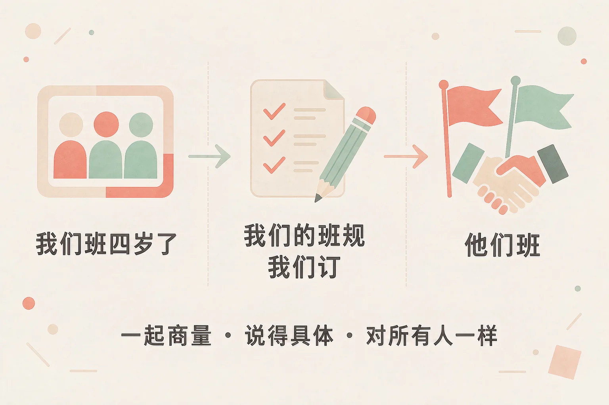
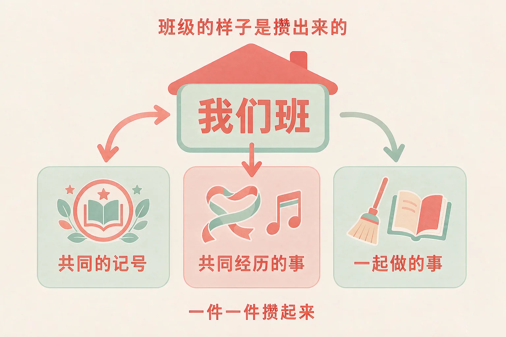
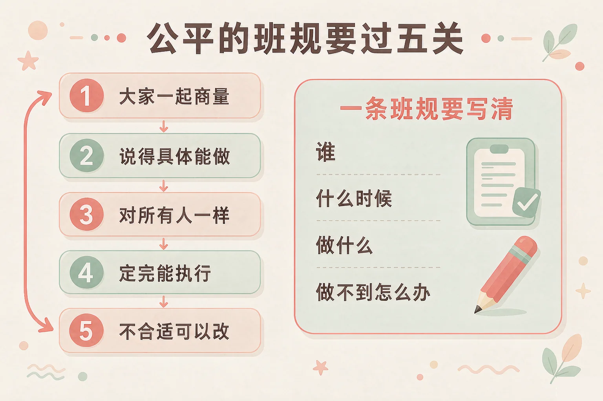

Gallery
v1.0.0 · skill v7.22.0
小学四年级 · 道德修养
四十几个人坐在同一间教室里，是怎么变成「我们班」的？

选一个你真正想知道的问题，后面的活动都会围着它转。
选择或输入后，这节课会围绕你的问题展开。
先凭直觉选一个，选完立刻看到解释——错了也没关系，正好知道要重点听哪里。
1. 「我们班」这三个字，是怎么来的？
牌子上的名字谁都能挂，可「我们班」的感觉是要一起做事才有的。错因提醒：常见错误是误认为「班级就是一群人在同一个教室里」——同一间教室里的四十几个人，要一起经历过一些事，才会变成「我们班」。
2. 一条公平的班规，下面哪一种定法比较合适？
大家一起商量，规矩才有人一起守；写得具体，规矩才用得住。错因提醒：有的同学误认为「班干部定得更快，也更公平」——快是真的，可大家没有参与过，执行的时候就没人当真。
3. 班里的合唱比赛没拿到名次，下面哪种做法更合适？
把力气用在下次怎么做好上，班里才不会因为一次比赛散了气。错因提醒：容易把「找到原因」和「找到人负责」搞混——找原因要的是下次做得更好，找人负责只会让那位同学以后不敢再张嘴。
为什么要学这一课？
我们每天都在这个班里上课、值日、聊天（And）；可是有时候只觉得「一群人在一个教室里」，没觉得这是「我们班」（But）；所以这节课先看看这四年给班里留下了什么，看看班级是怎么长大的（Therefore）。
「我们班」这三个字，不是开学那天就有的，是一起经历过的事一件一件攒出来的。
共同的记号
班名、班徽、班歌、教室里那面贴满照片的墙。看到这些记号，就知道我是这个班里的人。
共同经历的事
一起参加过的运动会、一起练过的合唱、一起为一道难题着急过，也一起为一次成功高兴过。

四年级能做的事，很具体
为班里设计一个标志 · 把班里的好人好事记下来，做成一本班级大事记 · 有同学请假好几天，帮他抄一份课上的要点 · 班里来了新同学，带他认一认教室、厕所、饮水机在哪儿。
有的同学误认为「为班级做事就是参加比赛拿名次」。可班徽是有人画的、大事记是有人写的、请假的同学是有人帮他抄要点的——这些事小得多，也真得多。
🔍 深层理解 换个角度再看一遍这件事，看看能不能说出背后的原理。
看见它：同一个教室，可以只是「上课的地方」，也可以是「我们班」。差别就在你和这里的人有没有一起做过事、一起记着一些事。
解释它：为什么共同经历这么重要？因为一起做过事的人，心里有一份「我们一起过」的记忆，遇事才会愿意先替对方想一步。
迁移它：这套眼光在家里也管用：一家人一起做过饭、一起出过一趟远门，家里的感觉就会不一样。
先点一件班里常常遇到的事，再从三个做法里选一个。选得好会告诉你为什么，选得不太合适也会告诉你还可以试试什么。
先点一件班里可能遇到的事。
班规不是老师拿来管我们的规矩，它是全班一起商量出来的约定。要公平，得过五关。

一条用得住的班规，长这样
课间在教室里不追跑，要跑就到操场上；由当天的值日班长提醒；提醒两次以后，当天的课间在座位上坐五分钟。谁、什么时候、做什么、做不到怎么办，四件事都说得清。
有的同学误认为「班规定得越严越好」。可太重的一条规矩执行不下去，最后就成了谁都不当真的一句话；真正管用的规矩，是大家做得到、也愿意做的那一条。
🔍 深层理解 换个角度再看一遍这件事，看看能不能说出背后的原理。
看见它：同一条班规，写「要守纪律」和写「要跑就到操场上」，留给同学的其实是两种不同的东西：一种是不知道怎么办，一种是知道怎么办。
比较它：「班长一个人定」和「大家在班会上一起定」，差的不只是过程；执行的时候，一个是班长在管人，一个是全班在守约定。
迁移它：这套办法在家里也用得上：和家里人商量晚上几点睡，先把「几点、谁提醒、做不到怎么办」说清楚，比争一句「你就是不听话」有用得多。
你现在是班会的主持人。先挑一个班里真实存在的问题，再从三种班规写法里选一种，看看这条班规执行下去会发生什么。
先在上面点一个班里存在的问题。
情境：四班最近课间总有人在教室里追跑，撞翻过两次水杯，还差点撞到人。请你看看四班是怎么把这条班规定下来的，又是怎么面对和别的班的比较的。
和别的班比的时候
有同学说五班的课间很安静，老师带大家去看了看——五班下课时会把桌椅轻轻推回原位，走路也放轻脚步。四班没有照抄，只挑了一条自己也能做的：下课时先把桌椅推好，再出门。同一个星期，四班的合唱没拿到名次，班会上有人说「都是跑调的同学害的」。大家没有接着怪人，而是一起把最不齐的那两句挑出来，约好下周一起练。
有的同学误认为「班规定下来就不能改了，改了就是没威信」。可四班正是把「坐五分钟」改成「擦一次黑板」，规矩才真正执行下去了——能改的班规，才活得久。
先凭直觉选一个，选完立刻看到解释——错了也没关系，正好知道要重点听哪里。
1. 关于班规，下面哪句话说得对？
大家一起商量、对所有人一样，规矩才有人愿意守。错因提醒：常见错误是误认为「班规越严越好」——太重的规矩执行不下去，最后成了谁都不当真的一句话。
2. 班里要解决「图书角很乱」这个问题，下面哪种班规写法更好？
借书、归还、清点三件事都写清楚了，规矩才用得住。错因提醒：有的同学误认为「规矩写严一点就不会乱」——把书全都锁起来确实不乱，可午休想看书的同学也看不成，大家会觉得这条规矩定得亏。
3. 隔壁班把教室布置得很好看，下面哪种做法更合适？
学过来能用的那一条，比一比快，也比照抄有用。错因提醒：容易把「照抄」当成「学得好」——全部照搬常常做出一个不像我们班的教室，也未必适合我们班的墙。
先点一条做法，再点它应该进的筐：在为班级做事的放一边，要调整的放另一边。
先在上面点一条做法。
分完之后，想一想：
「在为班级做事的」这一边里，你最想先做哪一条？写在下面，再说一说为什么选它。
先凭直觉选一个，选完立刻看到解释——错了也没关系，正好知道要重点听哪里。
1. 班会上要定一条新班规，一位同学提的建议你觉得不太合适，下面哪种做法更好？
说清楚担心的是哪一点，别人才听得进去，规矩也能定得更稳。错因提醒：常见错误是误认为「不反对就是配合」——定规矩的时候不说的那一条，往往就是以后最难执行的那一条。
2. 值日那天同组同学有事先走了，他负责的那一块没做，下面哪种做法更好？
把事情做完，也把话说清楚，他下一次就会记得。错因提醒：容易把「忍住不讲」和「大度」搞混——做了好事不说，同学会以为反正有人替他做，下次还是忘。
3. 两个同学为了一件事吵起来，都说自己有道理，下面哪种做法更好？
先听完两边的话，事情才看得明白。错因提醒：常见错误是误认为「不管就是不吃亏」——这样可能让矛盾越闹越大，事后班里每个人心里都不太舒服。
一句口诀：一起商量、说得具体、对所有人一样，定完能做、不好就改，班里的事人人有份。
给别人讲一遍：请用「我们班、一起商量、我来做一件小事」这三个说法，说清楚你和班级之间的一件事。
再动一动手：写一写你这周想为班里做的那一件事，写清做什么、什么时候做、做完告诉谁。
三层练习，做完第一、二层就算通关；第三层留给愿意继续探索的同学。
⭐ 基础巩固（必做）
⭐⭐ 能力应用（必做）
⭐⭐⭐ 迁移挑战（选做）
左边是学它之前要先会的，右边是学会之后可以继续探索的，下面是同一领域的伙伴知识。
图谱正在加载：首次进入需下载知识索引（约 1–3 秒），加载完成后本行会自动消失。